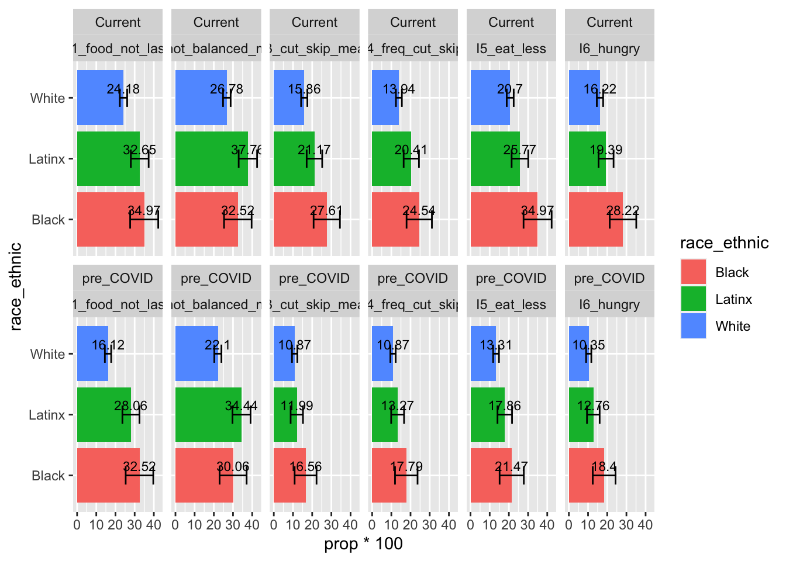
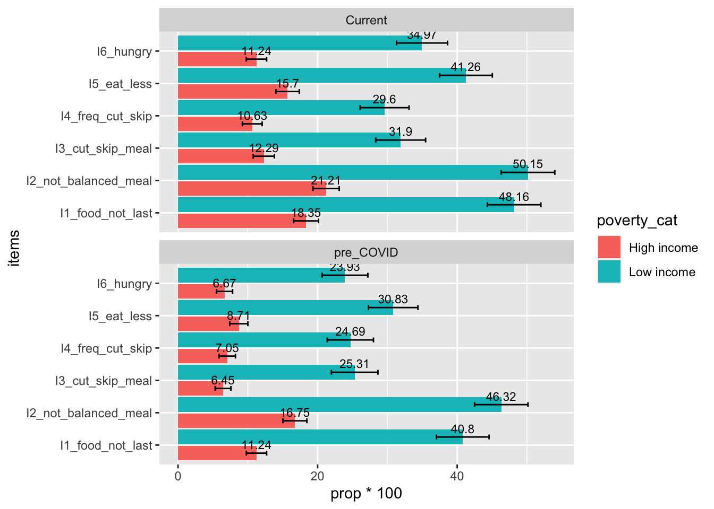
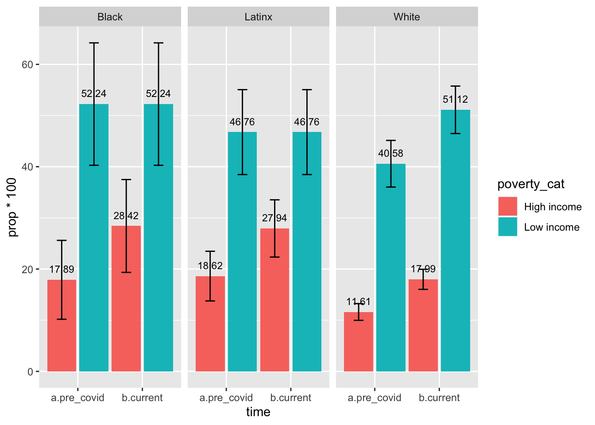
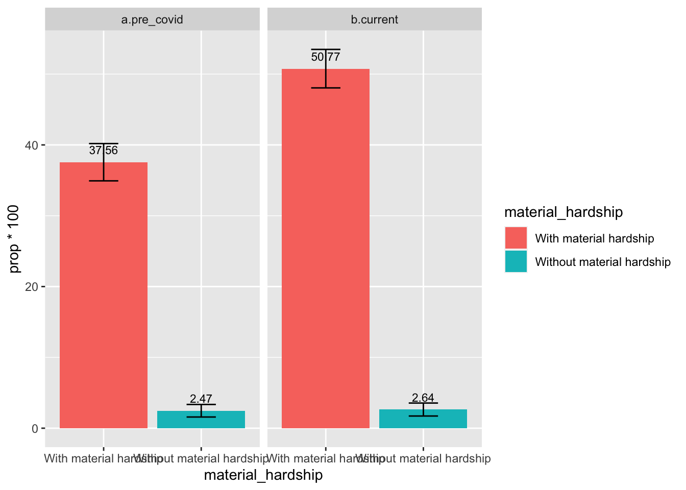
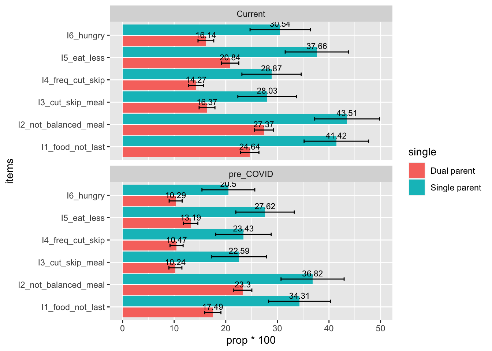
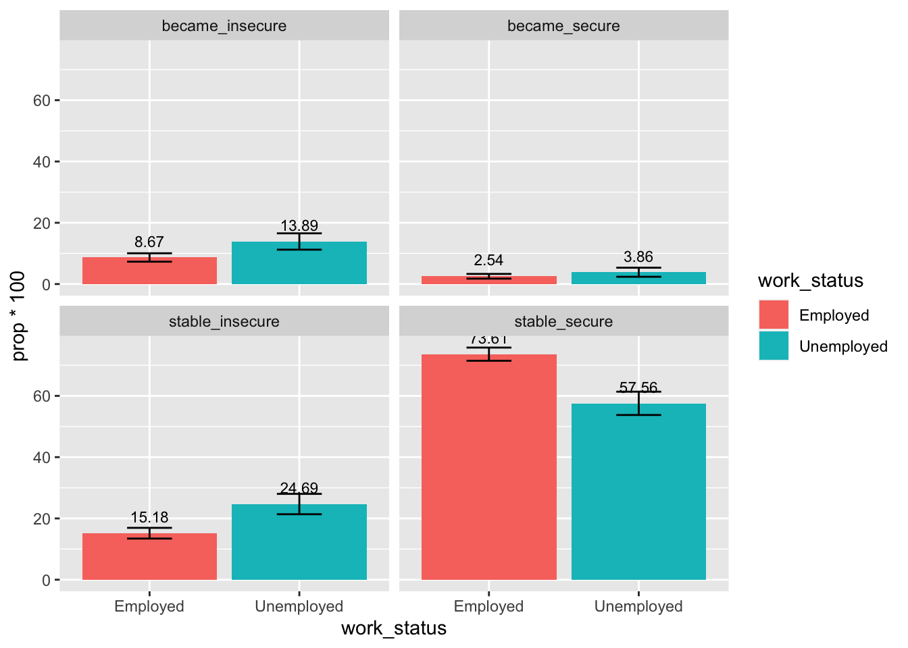

Food Insecurity
Sihong
11/13/2020
Food Insecurity Descriptive Analyses - Percentage of Food Insecurity Families
- Questions: For these following statements, please indicate whether the statement was often true, sometimes true, or never true for your household prior to/since the coronavirus (COVID-19) pandemic:
- The food that we bought just didn’t last, and we didn’t have money to get more (often true/sometimes true/never true)
- We couldn’t afford to eat balanced meals (often true/sometimes true/never true)
- Did you or other adult in your household ever cut the size of your meal or skip meals because there wasn’t enough money for food? (yes/no) - if yes, how often did this happen? (almost every month/some months but not every month/in only 1 or 2 months)
- Did you ever eat less than you felt you should because there wasn’t enough money for food? (yes/no)
- Were you ever hungry but didn’t eat because there wasn’t enough money for food? (yes/no)
- The food that we bought just didn’t last, and we didn’t have money to get more (often true/sometimes true/never true)
- Note. Food insecurity data were collected on weeks 19, 21, 23, 25, 27, & 31 follow-up surveys.
Between-Subject Analyses
- Note: analyses based on participants’ most recent responses
Overall
- Significantly higher percentage of families reported experiencing food insecurity currently (27.61%) compared to pre-COVID-19 (20.72%)
Item-Level Descriptives
Item 1: The food that we bought just didn’t last, and we didn’t have money to get more (coded as 1 = often/sometimes true, 0 = never true)
Item 2: We couldn’t afford to eat balanced meals (coded as 1 = often/sometimes true, 0 = never true)
Item 3: Did you or other adult in your household ever cut the size of your meal or skip meals because there wasn’t enough money for food? (coded as 1 = yes, 0 = no)
Item 4: Frequency of item 3 (coded as 1 = almost every month / some months but not every month, and 0 = only 1 or 2 months)
Item 5: Did you ever eat less than you felt you should because there wasn’t enough money for food? (coded as 1 = yes, 0 = no)
Item 6: Were you ever hungry but didn’t eat because there wasn’t enough money for food? (coded as 1 = yes, 0 = no)
Results showed that all items had significant increases from pre-COVID to current situation.
By Race/Ethnicity Groups
- During both pre-COVID-19 and current situation, significantly smaller percentage of White families experienced food insecurity compared to Black and Latinx families
- The percentage of food insecurity in Black, Latinx, and White families all increased from pre-COVID to current. However, only White families’ increases were statistically significant.
Item-Level Descriptives
- Lower percentage of White families reported experiencing the six items of food insecurity compared to Black and/or Latinx families. The differences were specifically significant (or marginally significant) between White and Black families.

By Poverty Level
- During both pre-COVID-19 and current situation, significantly larger percentage of low-income families experienced food insecurity compared to high-income families
- The percentage of food insecurity in low-income and high-income families both significantly increased from pre-COVID to current.

Item-Level Descriptives
- Significantly higher percentage of low-income families reported experiencing the six items of food insecurity compared to high-income families

By Poverty Level & Race/Ethnicity

By Material Hardship Status
- During both pre-COVID-19 and current situation, significantly larger percentage of families with material hardship experienced food insecurity compared to families without material hardship
- The percentage of food insecurity in families with material hardship significantly increased from pre-COVID to current.

Item-Level Descriptives
- Significantly higher percentage of families with material hardship reported experiencing the six items of food insecurity compared to families without material hardship

By Single Parent Status
- During both pre-COVID-19 and current situation, significantly larger percentage of single-parent families experienced food insecurity compared to dual-parent families
- The percentage of food insecurity in dual-parent families significantly increased from pre-COVID to current; the increase of food insecurity percentage in single-parent household was marginally significant
Item-Level Descriptives
- Significantly higher percentage of single-parent household reported experiencing the six items of food insecurity compared to dual-parent household

By Children with Special Needs Status
- During both pre-COVID-19 and current situation, significantly larger percentage of families of children with special needs experienced food insecurity compared to families of children without special needs
- The percentage of food insecurity in families of children without special needs significantly increased from pre-COVID to current; the increase of food insecurity percentage in families of children with special needs was marginally significant
Item-Level Descriptives
- Significantly higher percentage of families of children with special needs reported experiencing the six items of food insecurity compared to families of children without special needs

By Caregivers’ Employment Status
- During both pre-COVID-19 and current situation, significantly larger percentage of unemployed caregivers reported food insecurity compared to employed caregivers
- The percentage of food insecurity in families with employed caregivers significantly increased from pre-COVID to current; the increase of food insecurity percentage in families with unemployed caregivers was positive but not statistically significant (due to the small sample size of unemployed caregiers during pre-COVID)
Item-Level Descriptives
- Significantly higher percentage of unemployed caregivers reported experiencing the six items of food insecurity compared to employed caregivers

Trend of Change Over Time
- Overall, the percentage of families reporting food insecurity fluctuated but showed an increasing trend from pre-COVID to Week 19 (August 10th) to Week 31 (November 19th)
Within-Subject Analayses - Changes from Pre- to Post-COVID
- Note: based on participants’ most recent responses
Overall
By Race/Ethnicity Groups
- Significantly higher percentage of White families reported remaining high food security status compared to Black and Latinx families; significantly low percentage of White families reported remaining high food insecurity status compared to Black and Latinx families
By Poverty Level
- Compared to high-income families, there were significantly higher percentage of low-income families reporting remaining high food insecurity status,and significantly lower percentage of low-income families reporting remaining high food security status.
- Additionally, a small but significantly higher percentage of low-income families also reported becoming food insecure, and becoming secure, compared to high-income families
By Material Hardship Status
- Compared to families without material hardship, there were significantly higher percentage of families with material hardship reporting remaining high food insecurity status and becoming food insecure, and significantly lower percentage of families with material hardship reporting high remaining food security status.
- Additionally, a small but significantly higher percentage of families with material hardship also reported becoming food secure, compared to families without material hardship
By Single Parent Status
- Compared to dual-parent families, there were significantly higher percentage of single-parent families reporting remaining high food insecurity status, and significantly lower percentage of single-parent families reporting remaining high food security status.
By Children’s Special Needs Status
- Compared to families of children without special needs, there were significantly higher percentage of families of children with special needs reporting remaining high food insecurity status, and significantly lower percentage of families of children with special needs reporting remaining high food security status.
By Caregivers’ Post-COVID Employment Status
- Compared to employed caregivers, there were significantly higher percentage of unemployed caregivers reporting remaining high food insecurity status or becoming food insecure, and significantly lower percentage of unemployed caregivers reporting remaining high food security status.

Association Analyses - Food Security & Mental Health
Caregivers’ Mental Health
Caregivers’ Mental Health Breakdown by Low & High Food Security Status
- Note: analyses done based on most recent responses; mental health problems ranged 0-100
- Caregivers in families experiencing high food insecurity reported higher levels of total mental health problems, compared to caregivers in families not experiencing food insecurity.
- Caregivers in families experiencing high food insecurity reported higher levels of depression, anxiety, loneliness, and stress, compared to caregivers in families not experiencing food insecurity.
Cross-Sectional Correlations between Food Insecurity Raw Scores & Caregivers’ Mental Health
- Food insecurity raw score was significantly and positively correlated with caregivers’ mental health problems, including depression, anxiety, loneliness, stress, and total problems
## fi_raw_crt total_crt depress_crt anxiety_crt stress_crt lonely_crt
## fi_raw_crt 1.00 0.31 0.29 0.21 0.26 0.24
## total_crt 0.31 1.00 0.79 0.85 0.85 0.71
## depress_crt 0.29 0.79 1.00 0.55 0.52 0.47
## anxiety_crt 0.21 0.85 0.55 1.00 0.69 0.43
## stress_crt 0.26 0.85 0.52 0.69 1.00 0.44
## lonely_crt 0.24 0.71 0.47 0.43 0.44 1.00
##
## n
## fi_raw_crt total_crt depress_crt anxiety_crt stress_crt lonely_crt
## fi_raw_crt 2568 2568 2568 2568 2567 2568
## total_crt 2568 2568 2568 2568 2567 2568
## depress_crt 2568 2568 2568 2568 2567 2568
## anxiety_crt 2568 2568 2568 2568 2567 2568
## stress_crt 2567 2567 2567 2567 2567 2567
## lonely_crt 2568 2568 2568 2568 2567 2568
##
## P
## fi_raw_crt total_crt depress_crt anxiety_crt stress_crt lonely_crt
## fi_raw_crt 0 0 0 0 0
## total_crt 0 0 0 0 0
## depress_crt 0 0 0 0 0
## anxiety_crt 0 0 0 0 0
## stress_crt 0 0 0 0 0
## lonely_crt 0 0 0 0 0Food Insecurity Raw Score Predicting Subsequent Caregivers’ Mental Health Problems
- Food insecurity significantly predicted increased total mental health problems among caregivers during the subsequent response(b = .84, p < .001), controlling for the current total mental health problems score (b = .76, p < .001)
##
## Call:
## lm(formula = total_fl ~ fi_raw_crt + total_crt, data = fi_pmh_fl)
##
## Residuals:
## Min 1Q Median 3Q Max
## -87.616 -9.476 -0.826 9.265 67.607
##
## Coefficients:
## Estimate Std. Error t value Pr(>|t|)
## (Intercept) 9.476297 0.434473 21.811 < 2e-16 ***
## fi_raw_crt 0.886829 0.117950 7.519 6.53e-14 ***
## total_crt 0.737056 0.009717 75.852 < 2e-16 ***
## ---
## Signif. codes: 0 '***' 0.001 '**' 0.01 '*' 0.05 '.' 0.1 ' ' 1
##
## Residual standard error: 15.36 on 4958 degrees of freedom
## (605 observations deleted due to missingness)
## Multiple R-squared: 0.5734, Adjusted R-squared: 0.5732
## F-statistic: 3332 on 2 and 4958 DF, p-value: < 2.2e-16- Food insecurity significantly predicted increased depressive symptoms among caregivers during the subsequent response(b = 1.78, p < .001), controlling for the current depressive symptoms score (b = .60, p < .001)
##
## Call:
## lm(formula = depress_fl ~ fi_raw_crt + depress_crt, data = fi_pmh_fl)
##
## Residuals:
## Min 1Q Median 3Q Max
## -78.230 -8.205 -8.205 5.068 91.795
##
## Coefficients:
## Estimate Std. Error t value Pr(>|t|)
## (Intercept) 8.20484 0.42189 19.448 <2e-16 ***
## fi_raw_crt 1.64077 0.16767 9.786 <2e-16 ***
## depress_crt 0.60181 0.01162 51.803 <2e-16 ***
## ---
## Signif. codes: 0 '***' 0.001 '**' 0.01 '*' 0.05 '.' 0.1 ' ' 1
##
## Residual standard error: 21.84 on 4952 degrees of freedom
## (611 observations deleted due to missingness)
## Multiple R-squared: 0.401, Adjusted R-squared: 0.4007
## F-statistic: 1657 on 2 and 4952 DF, p-value: < 2.2e-16- Food insecurity significantly predicted increased anxiety symptoms among caregivers during the subsequent response(b = 1.22, p < .001), controlling for the current anxiety symptoms score (b = .60, p < .001)
##
## Call:
## lm(formula = anxiety_fl ~ fi_raw_crt + anxiety_crt, data = fi_pmh_fl)
##
## Residuals:
## Min 1Q Median 3Q Max
## -80.029 -15.440 -0.883 17.893 84.560
##
## Coefficients:
## Estimate Std. Error t value Pr(>|t|)
## (Intercept) 15.4400 0.6055 25.499 < 2e-16 ***
## fi_raw_crt 1.3768 0.1895 7.264 4.34e-13 ***
## anxiety_crt 0.5633 0.0118 47.736 < 2e-16 ***
## ---
## Signif. codes: 0 '***' 0.001 '**' 0.01 '*' 0.05 '.' 0.1 ' ' 1
##
## Residual standard error: 25.3 on 4954 degrees of freedom
## (609 observations deleted due to missingness)
## Multiple R-squared: 0.3384, Adjusted R-squared: 0.3381
## F-statistic: 1267 on 2 and 4954 DF, p-value: < 2.2e-16- Food insecurity significantly predicted increased stress among caregivers during the subsequent response(b = 1.40, p < .001), controlling for the current stress score (b = .62, p < .001)
##
## Call:
## lm(formula = stress_fl ~ fi_raw_crt + stress_crt, data = fi_pmh_fl)
##
## Residuals:
## Min 1Q Median 3Q Max
## -86.845 -18.707 1.758 16.619 81.293
##
## Coefficients:
## Estimate Std. Error t value Pr(>|t|)
## (Intercept) 18.70704 0.67730 27.620 <2e-16 ***
## fi_raw_crt 1.57364 0.18972 8.295 <2e-16 ***
## stress_crt 0.58696 0.01153 50.888 <2e-16 ***
## ---
## Signif. codes: 0 '***' 0.001 '**' 0.01 '*' 0.05 '.' 0.1 ' ' 1
##
## Residual standard error: 24.91 on 4905 degrees of freedom
## (658 observations deleted due to missingness)
## Multiple R-squared: 0.382, Adjusted R-squared: 0.3818
## F-statistic: 1516 on 2 and 4905 DF, p-value: < 2.2e-16- Food insecurity significantly predicted increased loneliness among caregivers during the subsequent response (b = .63, p < .001), controlling for the current loneliness score (b = .76, p < .001)
##
## Call:
## lm(formula = lonely_fl ~ fi_raw_crt + lonely_crt, data = fi_pmh_fl)
##
## Residuals:
## Min 1Q Median 3Q Max
## -90.540 -11.466 0.898 7.080 88.534
##
## Coefficients:
## Estimate Std. Error t value Pr(>|t|)
## (Intercept) 11.466478 0.495548 23.139 < 2e-16 ***
## fi_raw_crt 0.633763 0.128897 4.917 9.08e-07 ***
## lonely_crt 0.752713 0.009612 78.314 < 2e-16 ***
## ---
## Signif. codes: 0 '***' 0.001 '**' 0.01 '*' 0.05 '.' 0.1 ' ' 1
##
## Residual standard error: 17.08 on 4954 degrees of freedom
## (609 observations deleted due to missingness)
## Multiple R-squared: 0.5723, Adjusted R-squared: 0.5721
## F-statistic: 3314 on 2 and 4954 DF, p-value: < 2.2e-16Children’ Mental Health
Children’s Mental Health Breakdown by Low & High Food Security Status
- Note: analyses done based on most recent responses; mental health problems ranged 0-100
- Caregivers in families experiencing high food insecurity reported higher levels of children’s total mental health problems, compared to caregivers in families not experiencing food insecurity.
- Caregivers in families experiencing high food insecurity reported higher levels of children’s fussiness/defiance and fear/anxiety, compared to caregivers in families not experiencing food insecurity.
Cross-Sectional Correlations between Food Insecurity Raw Scores & Children’ Mental Health
- Food insecurity raw score was significantly and positively correlated with children’ mental health problems, including fussiness/defiance, fear/anxiety, and total problems
## fi_raw_crt ctotal_crt fussy_crt fear_crt
## fi_raw_crt 1.00 0.25 0.20 0.23
## ctotal_crt 0.25 1.00 0.86 0.85
## fussy_crt 0.20 0.86 1.00 0.46
## fear_crt 0.23 0.85 0.46 1.00
##
## n
## fi_raw_crt ctotal_crt fussy_crt fear_crt
## fi_raw_crt 2568 2568 2567 2566
## ctotal_crt 2568 2568 2567 2566
## fussy_crt 2567 2567 2567 2566
## fear_crt 2566 2566 2566 2566
##
## P
## fi_raw_crt ctotal_crt fussy_crt fear_crt
## fi_raw_crt 0 0 0
## ctotal_crt 0 0 0
## fussy_crt 0 0 0
## fear_crt 0 0 0Food Insecurity Raw Score Predicting Subsequent Caregivers’ Mental Health Problems
- Food insecurity significantly predicted increased total mental health problems among children during the subsequent response(b = 1.09, p < .001), controlling for the current total mental health problems score (b = .65, p < .001)
##
## Call:
## lm(formula = ctotal_fl ~ fi_raw_crt + ctotal_crt, data = fi_cp_fl)
##
## Residuals:
## Min 1Q Median 3Q Max
## -80.399 -12.306 -3.009 12.694 83.471
##
## Coefficients:
## Estimate Std. Error t value Pr(>|t|)
## (Intercept) 12.30560 0.49647 24.79 < 2e-16 ***
## fi_raw_crt 1.05580 0.15642 6.75 1.65e-11 ***
## ctotal_crt 0.62814 0.01102 57.01 < 2e-16 ***
## ---
## Signif. codes: 0 '***' 0.001 '**' 0.01 '*' 0.05 '.' 0.1 ' ' 1
##
## Residual standard error: 20.67 on 4958 degrees of freedom
## (605 observations deleted due to missingness)
## Multiple R-squared: 0.4249, Adjusted R-squared: 0.4246
## F-statistic: 1831 on 2 and 4958 DF, p-value: < 2.2e-16- Food insecurity significantly predicted increased fussiness/defiance among children during the subsequent response(b = 1.17, p < .001), controlling for the current fussiness/defiance score (b = .59, p < .001)
##
## Call:
## lm(formula = fussy_fl ~ fi_raw_crt + fussy_crt, data = fi_cp_fl)
##
## Residuals:
## Min 1Q Median 3Q Max
## -82.063 -20.170 1.744 19.081 79.830
##
## Coefficients:
## Estimate Std. Error t value Pr(>|t|)
## (Intercept) 20.1699 0.6961 28.977 < 2e-16 ***
## fi_raw_crt 1.1442 0.1985 5.765 8.68e-09 ***
## fussy_crt 0.5617 0.0118 47.585 < 2e-16 ***
## ---
## Signif. codes: 0 '***' 0.001 '**' 0.01 '*' 0.05 '.' 0.1 ' ' 1
##
## Residual standard error: 26.52 on 4950 degrees of freedom
## (613 observations deleted due to missingness)
## Multiple R-squared: 0.3325, Adjusted R-squared: 0.3322
## F-statistic: 1233 on 2 and 4950 DF, p-value: < 2.2e-16- Food insecurity significantly predicted increased fear/anxiety among children during the subsequent response(b = 1.35, p < .001), controlling for the current fear/anxiety score (b = .59, p < .001)
##
## Call:
## lm(formula = fear_fl ~ fi_raw_crt + fear_crt, data = fi_cp_fl)
##
## Residuals:
## Min 1Q Median 3Q Max
## -74.446 -9.963 -8.586 12.616 91.414
##
## Coefficients:
## Estimate Std. Error t value Pr(>|t|)
## (Intercept) 8.58563 0.47364 18.127 < 2e-16 ***
## fi_raw_crt 1.37715 0.19076 7.219 6.01e-13 ***
## fear_crt 0.57598 0.01161 49.627 < 2e-16 ***
## ---
## Signif. codes: 0 '***' 0.001 '**' 0.01 '*' 0.05 '.' 0.1 ' ' 1
##
## Residual standard error: 25.25 on 4949 degrees of freedom
## (614 observations deleted due to missingness)
## Multiple R-squared: 0.3616, Adjusted R-squared: 0.3613
## F-statistic: 1402 on 2 and 4949 DF, p-value: < 2.2e-16Mediation Analyses: Food Insecurity -> Caregivers’ Mental Health -> Children’s Mental Health
Path c (direct effect): food insecurity -> children’s mental health problems at second subsequent response
- Food insecurity significantly predicted increased total mental health problems among children during the second subsequent response(b = 1.27, p < .001), controlling for the current total mental health problems score (b = .65, p < .001)
##
## Call:
## lm(formula = ctotal_fl2 ~ fi_raw_crt + ctotal_crt, data = fi_pmh_cp)
##
## Residuals:
## Min 1Q Median 3Q Max
## -74.593 -12.948 -3.359 12.052 87.052
##
## Coefficients:
## Estimate Std. Error t value Pr(>|t|)
## (Intercept) 12.94761 0.55264 23.43 < 2e-16 ***
## fi_raw_crt 1.19034 0.18062 6.59 4.95e-11 ***
## ctotal_crt 0.61645 0.01235 49.93 < 2e-16 ***
## ---
## Signif. codes: 0 '***' 0.001 '**' 0.01 '*' 0.05 '.' 0.1 ' ' 1
##
## Residual standard error: 21.08 on 4090 degrees of freedom
## (1473 observations deleted due to missingness)
## Multiple R-squared: 0.408, Adjusted R-squared: 0.4077
## F-statistic: 1409 on 2 and 4090 DF, p-value: < 2.2e-16Path a: food insecurity -> caregivers’s mental health problems at first subsequent response
- Food insecurity significantly predicted increased total mental health problems among children during the second subsequent response(b = .84, p < .001), controlling for the current total mental health problems score (b = .76, p < .001)
##
## Call:
## lm(formula = total_fl ~ fi_raw_crt + total_crt, data = fi_pmh_cp)
##
## Residuals:
## Min 1Q Median 3Q Max
## -87.616 -9.476 -0.826 9.265 67.607
##
## Coefficients:
## Estimate Std. Error t value Pr(>|t|)
## (Intercept) 9.476297 0.434473 21.811 < 2e-16 ***
## fi_raw_crt 0.886829 0.117950 7.519 6.53e-14 ***
## total_crt 0.737056 0.009717 75.852 < 2e-16 ***
## ---
## Signif. codes: 0 '***' 0.001 '**' 0.01 '*' 0.05 '.' 0.1 ' ' 1
##
## Residual standard error: 15.36 on 4958 degrees of freedom
## (605 observations deleted due to missingness)
## Multiple R-squared: 0.5734, Adjusted R-squared: 0.5732
## F-statistic: 3332 on 2 and 4958 DF, p-value: < 2.2e-16Path b: caregivers’ mental health problems at first subsequent response -> children’s mental health problems at second subsequent response
- Caregivers’ mental health problems at the first subsequent response significantly predicted increased total mental health problems among children during the second subsequent response(b = .15, p < .001), controlling for children’s total mental health problems score at the first subsequent response (b = .64, p < .001) and current food insecurity (path c’: b = .77, p < .01)
##
## Call:
## lm(formula = ctotal_fl2 ~ total_fl + ctotal_fl + fi_raw_crt,
## data = fi_pmh_cp)
##
## Residuals:
## Min 1Q Median 3Q Max
## -76.434 -11.989 -1.828 12.259 86.009
##
## Coefficients:
## Estimate Std. Error t value Pr(>|t|)
## (Intercept) 7.65315 0.64662 11.84 < 2e-16 ***
## total_fl 0.16010 0.01503 10.65 < 2e-16 ***
## ctotal_fl 0.60109 0.01274 47.19 < 2e-16 ***
## fi_raw_crt 0.77826 0.17452 4.46 8.43e-06 ***
## ---
## Signif. codes: 0 '***' 0.001 '**' 0.01 '*' 0.05 '.' 0.1 ' ' 1
##
## Residual standard error: 19.99 on 4089 degrees of freedom
## (1473 observations deleted due to missingness)
## Multiple R-squared: 0.4678, Adjusted R-squared: 0.4674
## F-statistic: 1198 on 3 and 4089 DF, p-value: < 2.2e-16Testing Indirect Effect using RMediation Method
- Indirect effect was statistically significant: a*b = .126, 95%CI[.08, .18], p <.001
## $`97.5% CI`
## [1] 0.07697582 0.18272167
##
## $Estimate
## [1] 0.126
##
## $SE
## [1] 0.02703849